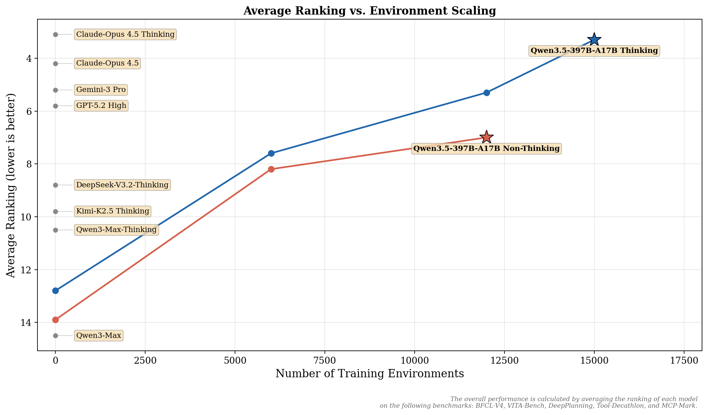
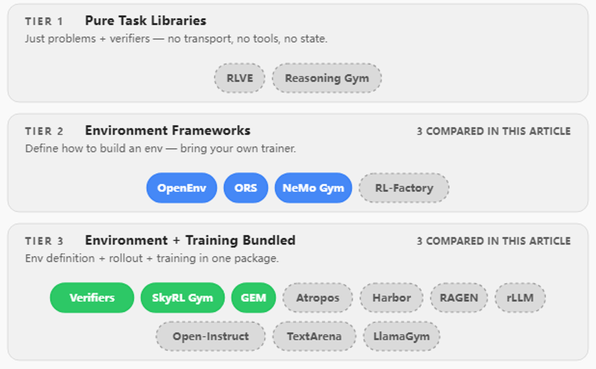
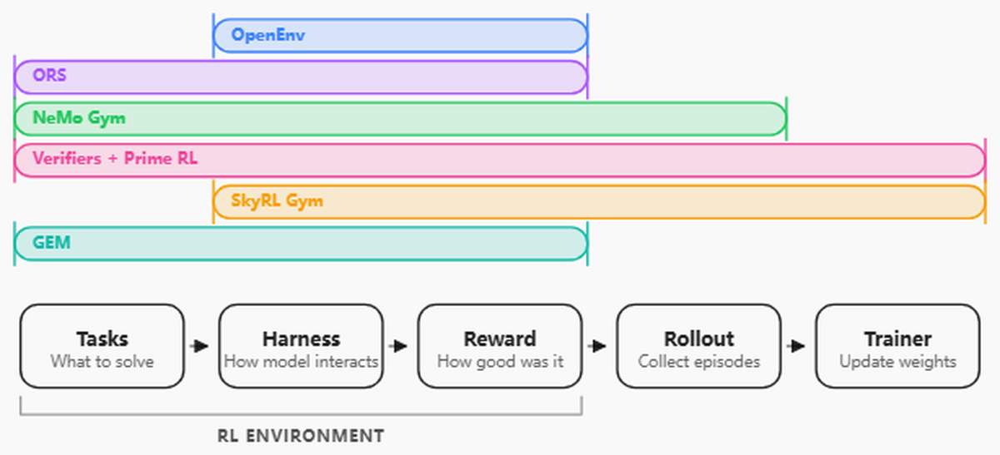
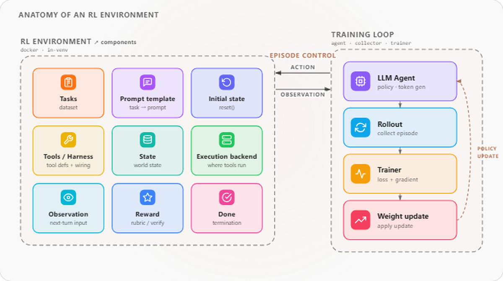
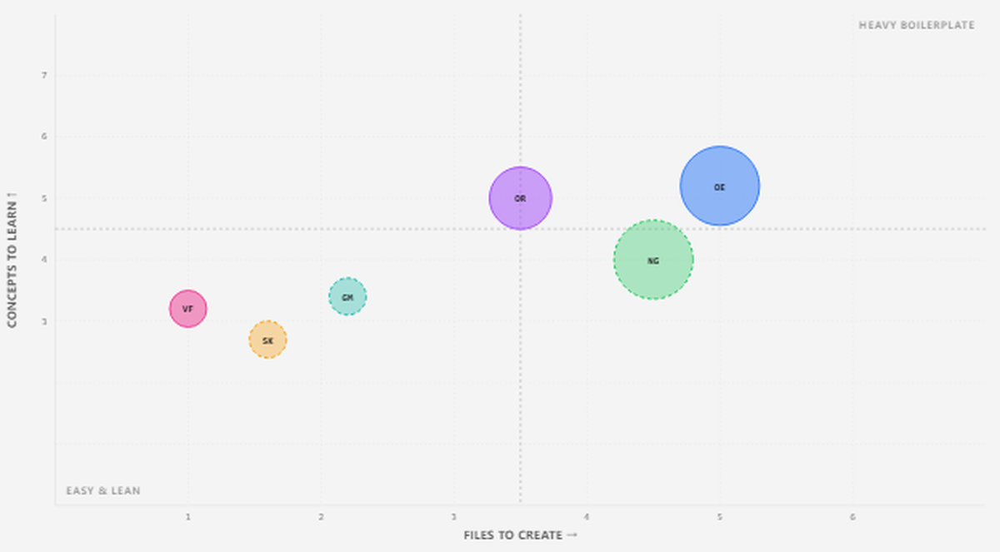
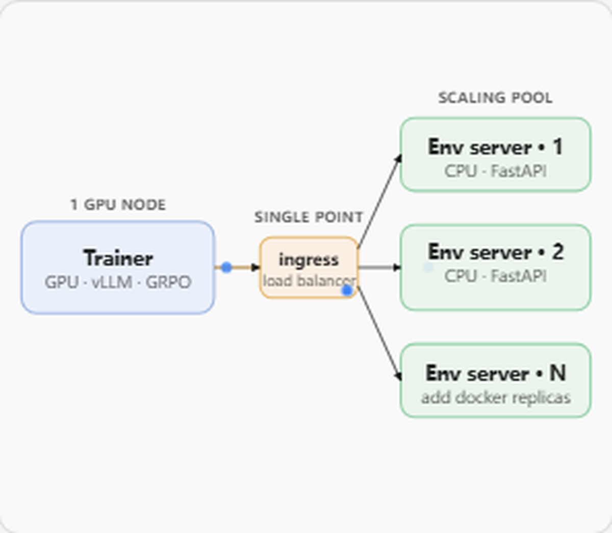
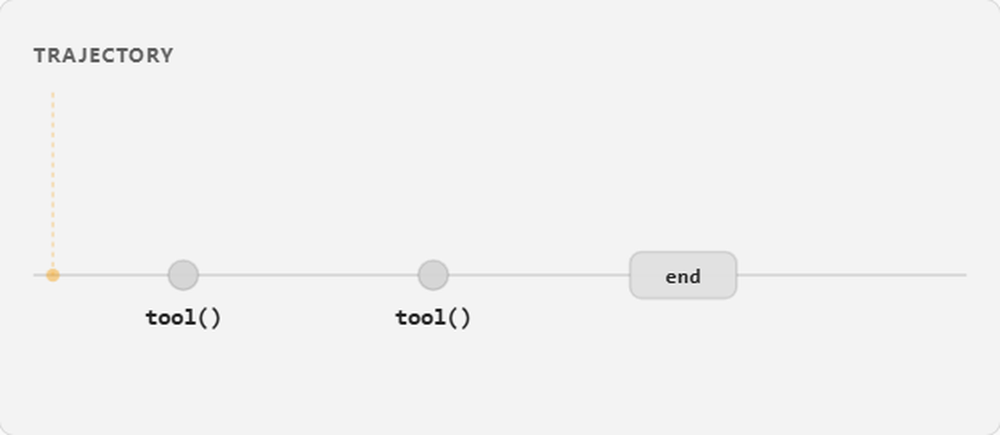
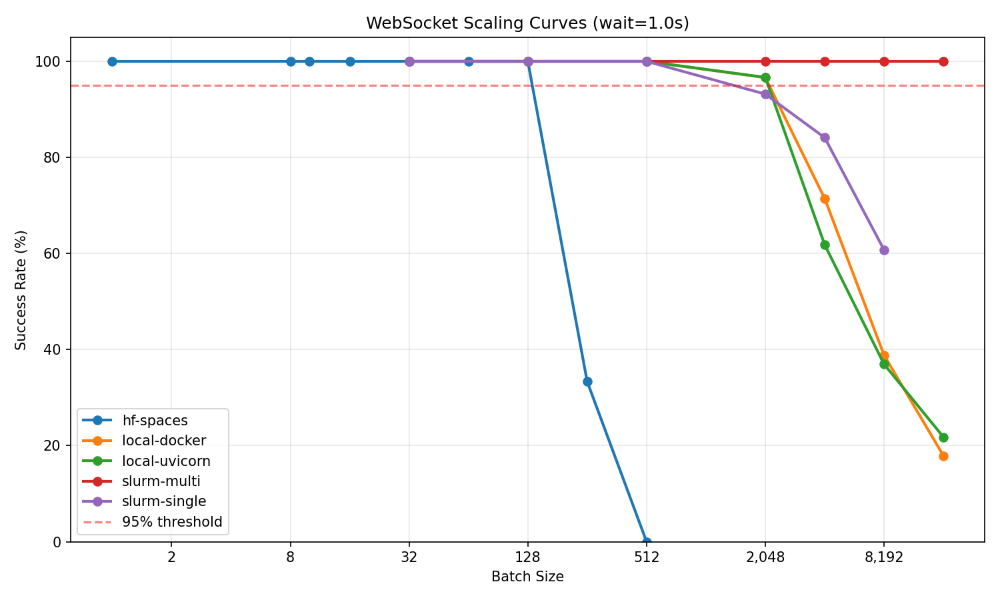
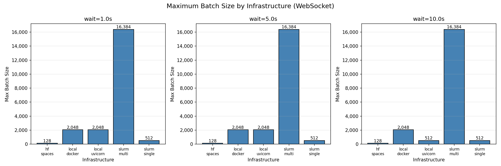

RL已成为智能体LLM与推理模型能力跃升的主要引擎：SFT（监督微调）触顶之后，是RL继续把性能往上抬。而RL环境，就是模型在长视野里练习、被打分、从交互中学到东西的地方。
本文由Hugging Face团队（Adithya S Kolavi、Lewis Tunstall、Quentin Gallouédec等）撰写：把同一个RL环境在六个框架里各实现一遍，拆解一个「LLM时代的RL环境」到底由什么组成、奖励怎么接进循环、如何扩展到数千并发会话。源文在HF Space发布，配套代码在RL_Envs_101仓库。
RL已成为智能体LLM和推理模型能力提升的主要驱动力：SFT（监督微调）触顶的地方，RL继续把性能抬过天花板。为匹配能力目标，环境数量急剧扩张：Qwen3在约20个通用域任务上训练，Qwen3-Coder在阿里云上推进到20,000个并行环境，MiniMax的Forge框架在数十万个真实环境上训练M2.5，Qwen3.5则报告在百万级agent环境上训练。
Qwen团队把Qwen3之后绝大部分的post-training收益归因于「对我们能想到的所有RL任务与环境做近乎无节制的扩展」：刻意提高环境难度与泛化性，而不是在狭窄benchmark上过拟合。瓶颈早已不是「能不能搭一个环境」，而是「怎么跑十万个、保持它们诚实、喂进训练循环」。

框架正在涌现来标准化这件事，环境中心也相继出现：Hugging Face Spaces上社区已发布4000+ 个MCP兼容环境，PrimeIntellect的Environments Hub与openreward.ai又各加上数千个。一个RL环境到底由什么构成，从「显而易见」变成了「值得弄清」。
LLM与RL环境的交互目前没有标准协议，每个框架对同一撮问题各选各的答案，而这些答案塑造你写代码的方式、部署方式、以及训练坏了要调试什么。构建同一个环境六遍时，最要命的四个问题：
什么是「环境」？有的框架把它当成就是个奖励函数，有的包含工具、状态管理和完整多轮循环，还有的干脆捆一整套训练流水线。它跑在哪？有的作为HTTP服务（Docker/HF Spaces）独立于训练扩缩，有的跑在训练虚拟环境进程内：没有网络跳但也没隔离。带多少trainer？少数框架自带trainer（Prime RL、NeMo RL、SkyRL），其他需要适配器接到外部训练循环（如TRL）。奖励何时触发？每次工具调用、每步rubric、整集后验证、还是外部打分函数：各自的信号密度与打分权归属不同。
本文只是逐个框架走完这些及相关问题，带并排代码、基准数字，最后给一棵决策树。
为什么要有环境框架？主要是标准化：如果LLM trainer与环境的通信有像MCP那样的约定协议，任何训练循环可插任何环境、不同领域研究者遵循同一形状、别人的环境对你的训练直接可复用。我们调研后挑了六个实际实现做头对头比较（OpenEnv、ORS、NeMo Gym、Verifiers、SkyRL Gym、GEM）。

其余十个评估过但未实现的框架因定位不同被排除：Atropos（不同范式，环境自持推理并POST打分结果，与TRL逐轮工具调用不兼容）；Harbor（Terminal-Bench 2.0官方harness，并行容器跑agent）；RLVE与Reasoning Gym（纯验证器库，无传输无工具无状态）；RAGEN（全栈但紧耦自家训练循环）；rLLM（装饰器范式，拦截LLM调用，无环境类）；RL-Factory（MCP配置式，雏形）；Open-Instruct（环境只是奖励函数）；TextArena（特定游戏多智能体）；LlamaGym（Gymnasium包装，未维护）。
这16个框架干净地分成三级，本文聚焦支持多轮工具调用环境的中高级框架。
经典RL（Atari、机器人）里环境小而自足：教科书例子CartPole：轨道上的小车顶个平衡杆，agent看4个数状态、选左右两个动作、环境前进一步物理，杆不倒每步 +1。环境就是物理模拟器加奖励规则。

LLM时代复杂得多。常见形状是：agent是语言模型，环境是能跑shell命令或执行代码的沙箱，动作空间是框架暴露的任意工具集。每次rollout是多轮对话：模型写、跑工具、读输出、决定下一步、最后提交答案；环境给完成的rollout打分并返回奖励，训练步把每个prompt的一组rollout收进来学习。
整条循环从选任务到更新策略，是RL训练系统要端到端处理的。但没有两个框架以同样方式切分这件事：有的只给你环境上的一层薄协议，有的包一个完整trainer。每个系统的脊柱都相同：五阶段：要解决的任务、让模型交互的harness、给行为打分的奖励信号、收集完整episode的rollout收集器、把episode变成策略更新的trainer；变的是各框架把哪一段装进盒子递给你。
浸在六个框架里足够久后，同一组组件反复出现：构建或挑选LLM agent环境时你必须想的那些部分：任务来源、初始状态设置、工具定义、会话/状态的持久化、奖励机制、终止条件、可观测性/日志、安全/沙箱。每个框架都提供一个不同的子集：✅ 完整 = 框架有第一方API；⚙️ 部分 = 能用但要靠约定或trainer hook；🔧 自带(BYO) = 留给你。

打包最多的是Verifiers：数据集+工具+rubric+rollout harness+训练全包；打包最少的是OpenEnv：只有协议（MCP）、会话管理、内置Rubric系统，任务和执行后端你自己带。ORS和NeMo Gym给部署协议+奖励机制、执行后端和任务自己带；GEM自带环境+Gymnasium API但trainer自己带。
各家文档用不同词汇说同一件事：奖励函数在OpenEnv/Verifiers叫Rubric、NeMo Gym是verify() 端点、ORS是ToolOutput上的reward字段、SkyRL Gym和GEM就是step() 返回的东西。整集结束标志有的叫done、有的terminated vs truncated。同一概念六个名字：读两份文档像读两个API。
构建（写什么代码）：第一个先撞上的就是API面：我子类化什么、怎么声明工具、多少样板代码。同一玩具环境六个框架各有写法：OpenEnv用MCPEnvironment + mcp.tool装饰器；ORS用ors.Environment + tool装饰器加Pydantic输入；NeMo Gym用SimpleResourcesServer + app.post("/name")；Verifiers是普通函数；SkyRL Gym用BaseTextEnv、工具在step() 内；GEM用gem.Env、也是step() 内。返回类型也各异：str / ToolOutput / Response / 元组。

通信与部署（最根本的架构分裂）：环境是作为独立HTTP服务跑，还是跑在训练进程内。HTTP框架住在自己的机器（便宜的CPU盒子或HF Space），trainer侧只需SDK或requests，靠加服务副本/负载均衡扩缩；进程内框架共享训练GPU节点、把整个框架包拉进训练venv，靠加相同训练worker扩缩。多数环境自己不干重活，委托给沙箱提供商（E2B、Modal、自定义容器后端）：无论哪种形态，重计算都在你选的沙箱后面，部署形状影响的是依赖隔离方式而非性能上限。

奖励是框架间理念差异最大的地方，四种截然不同的模式。外部奖励：训练脚本决定，环境只返回工具输出文本，奖励函数你写（SkyRL Gym、GEM）。服务器内嵌奖励：每个工具响应都带奖励，服务端边走边评，trainer只读env.reward（ORS）。整集后验证：单独的 /verify端点在整集后调用，服务端做整条轨迹的整体评估（NeMo Gym）。环境内嵌rubric：环境带一个可组合的Rubric对象（仿nn.Module），在step() 中自动计算奖励并写入observation.reward，支持WeightedSum/Sequential/Gate组合、LLM-as-judge（LLMJudge）与轨迹级打分（OpenEnv、Verifiers）。
奖励函数内部又有三种调味：程序化/可验证奖励（确定性检查：答案匹配、单测过、JSON可解析、数学算对；DeepSeek-R1等扩大的RLVR模式，可扩展、难钻空子，但只适用于有明确ground-truth oracle的任务）；LLM-as-judge奖励（覆盖程序化够不着的主观场景：创意写作、开放推理、摘要质量，靠独立模型按rubric打分；风险是reward hacking，最近用rubric分解和「先思考再打分」的thinking judge来对抗）；稠密vs稀疏奖励（稀疏只在轨迹末尾触发pass/fail，稠密每步/token/子目标触发，credit-assignment信号更丰富、训练更快更稳，但更易被钻空子）。

实践中几乎总是混合：可验证部分用程序化组件，不可验证部分加LLM-judge组件，按权重合成单个标量。框架的差别只在「你在哪写这个合成、它何时触发」。
把环境部署成长期服务（FastAPI加uvicorn、打包成和HF Spaces相同的Docker镜像），OpenEnv/ORS/NeMo Gym都是service-in-container形态，仅线协议不同。基准实测最大并发：多节点SLURM（96核）= 16,384；本地uvicorn 8 worker（8核）= 2,048；SLURM单节点（48 worker）= 512；HF Spaces免费档（2核）= 128。


关键观察：Docker几乎无额外开销（本地Docker与uvicorn同为2,048上限）；负载均衡配置至关重要：修好Envoy前多节点只有128，修好后16,384（128倍提升）；HF Spaces封顶约128并发，够开发和demo，且是最大的现成环境社区目录；服务端根本不是瓶颈，笔记本就能扛2,048会话：执行后端（沙箱创建、工具执行）无论哪个框架都主导每步延迟；水平扩展是负载均衡配置问题而非协议问题，WebSocket强制粘性会话更难均衡，面向数千环境的设计，无状态按请求 + 会话ID的形态陷阱更少。
OpenEnv（Meta PyTorch）：基于MCP的契约，给协议+会话与传输层（WebSocket）+可组合Rubric奖励系统；任务、数据集、执行后端自己带。适合要薄的可换环境接口、且需保持MCP兼容的工具链。
ORS（Open Reward Standard，General Reasoning）：工具/任务/奖励形状的标准API，tool装饰器 装饰器、带行内逐步奖励的ToolOutput、list_tasks(split) 服务端任务管理；openreward.ai平台在其上托管330+ 环境。适合接入大型现成环境目录。
NeMo Gym（NVIDIA）：FastAPI工具服务器 + 独立 /verify整集后奖励端点，内置50+ 环境、与NeMo/Megatron训练栈紧集成。适合轨迹级打分与已在NVIDIA栈上的团队。
Verifiers（PrimeIntellect）：开箱打包最多：数据集、工具、rubrics、rollout harness、trainer、CLI脚手架；Environments Hub是共享/拉取环境的社区注册表。适合带完整工具链从零快速跑到训练。
SkyRL Gym（NovaSky/Berkeley）：Gym风格API，BaseTextEnv + ToolGroup类、依赖极少，正是训练SkyRL-Agent的同一库。适合想完全掌控rollout循环、又是熟悉的Gym心智模型。
GEM（Axon-RL）：最贴近Gymnasium API，reset() 返回观测、step() 返回五元组、AsyncVectorEnv提供向量化环境；内置24+ 游戏/数学/代码环境。适合把Gymnasium/Atari心智模型搬过来用。
六个框架、同一环境全跑一遍后几点浮现：环境边界是设计选择而非标准：OpenEnv/SkyRL给你薄工具接口、自己管数据集/奖励/trainer接线，Verifiers/GEM全包四个；没有谁错，是控制vs上线速度的取舍。HTTP vs进程内是对响的分叉：沙箱化执行（代码/shell/浏览器）想要HTTP、可独立扩环境算力，纯Python（游戏/数学/文本推理）想要进程内、零RPC开销；先定这条轴，表格迅速收窄。数据集耦合双刃剑：打包（Verifiers/ORS）环境数据集成一体、不能只换其一；解耦（OpenEnv/SkyRL）自己接数据集、但任何任务配任何环境。奖励时机比奖励内容重要：按调用打分对逐步反馈干净、但奖励只在末尾有意义时别扭；整集后打分对轨迹级干净、却无集内信号。
框架特定坑：OpenEnv的MCP协议仍在演进、版本间可能需更新适配器；ORS的SDK aiohttp需要raw HTTP绕行；NeMo Gym要Python 3.12、/verify的严格Pydantic校验对非常规轨迹形状返回422；Verifiers数据集初始化时必需、环境与数据集耦合；SkyRL Gym的step() 返回dict非dataclass；GEM的gem-llm可能未装、需要条件导入。
选择树（四个是/否问题快速收窄）：想要独立扩展环境算力选HTTP系（OpenEnv/ORS/NeMo Gym）；想要零基础设施、纯Python任务选进程内系（Verifiers/SkyRL/GEM）；想要现成训练工具链选Verifiers；想要坚持Gymnasium心智模型选GEM/SkyRL。
快照是2026年5月。空间还年轻：六个框架全部2025年才发布且移动极快。六个框架用不同API做同一件事，正是早期探索的样子。可以预期未来一年协议（MCP、ORS）周围会收敛到更少几个。
每个框架都是同一件东西穿着不同衣裳：同一环境能移植到全部六个。差别在于环境如何接入训练、而非它能做什么。你选任何一个都不会缺失本质的东西，变的只是便利性：哪个最顺手上手取决于你已有栈里有什么。
参考：https://huggingface.co/spaces/AdithyaSK/rl-environments-guide